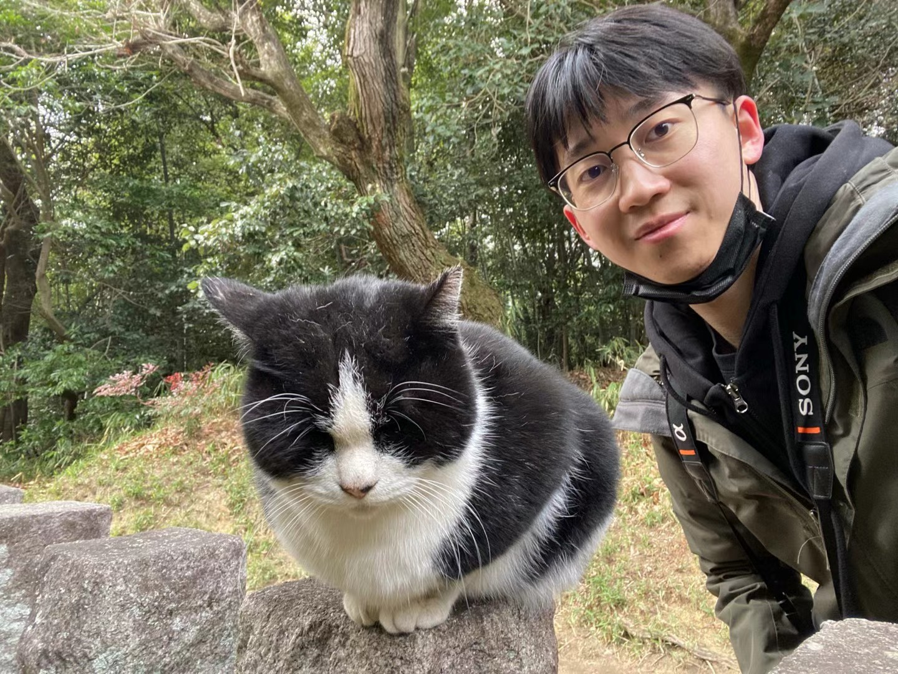

Multimodal reasoning
Grounding reasoning and reinforcement learning in visual evidence.
Nice to meet you !!!😊 Hope you are happy every day!!!💥
Personal homepage
Ph.D. Student in Computer Science
Fudan University · Shanghai Innovation Institute
Multimodal reasoning, trustworthy representations, and interactive intelligence.

I am a Ph.D. student jointly trained by the Institute of Trustworthy Embodied Artificial Intelligence (TEAI), Fudan University, and Shanghai Innovation Institute (SII). I graduated from Beijing Jiaotong University in 2020 with a degree in Computer Science.
I am supervised by Zuxuan Wu and Yu-Gang Jiang.
I am currently interning at ByteDance TikTok, working with Penghao Zhou.
My research spans multimodal reasoning, reinforcement learning, and interpretable visual representations, with an emphasis on agents that understand evolving environments and provide timely assistance.
Grounding reasoning and reinforcement learning in visual evidence.
Learning interpretable visual concepts and robust multimodal representations.
Understanding evolving environments and deciding when to assist.
Selected work
Paper · Project · Code